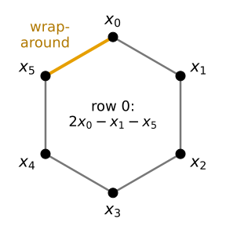
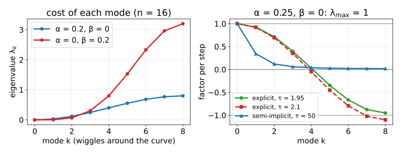
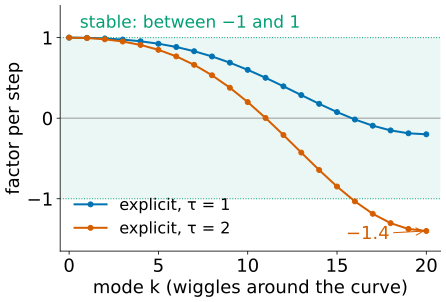
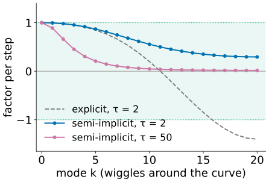
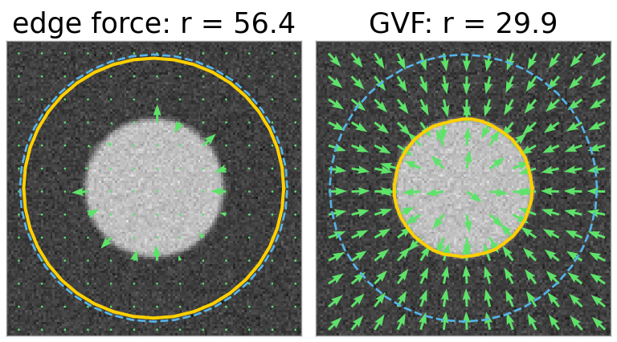
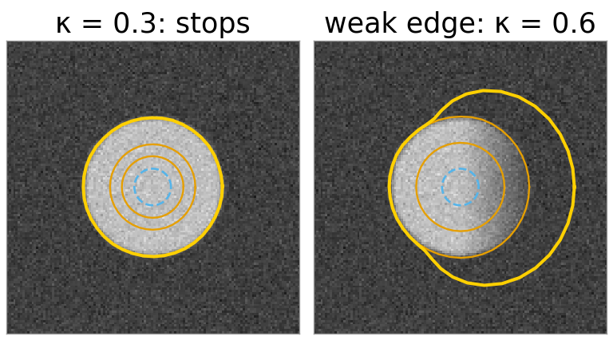
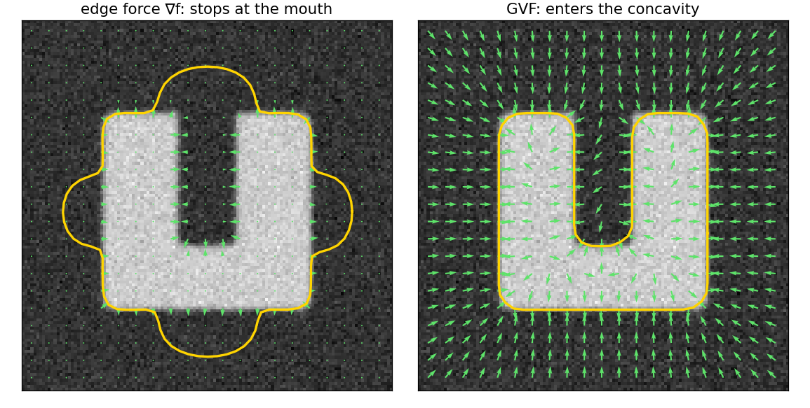
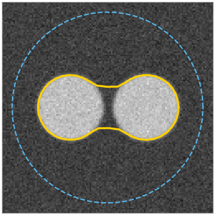

Last unit: a snake moves its beads downhill on an energy, and explodes when the step is too large. Today we look at the update as linear algebra, and give the snake a longer reach.
The internal forces of all beads at once: one matrixA, the same for x and y.
A is a circular convolution, so its eigenvectors are waves around the curve: wiggles are expensive, the overall shape is cheap.
Why the plain step explodes, and the semi-implicit step that never does.
The capture range: larger \sigma, a balloon force, gradient vector flow.
What snakes cannot do, and where that leads.
Slides titled The math give the formulas and proofs; the ideas are complete without them.
Put the x coordinates of the n beads in one vector \mathbf x = (x_0, \dots, x_{n-1}) (and the y’s in another). The internal force on every bead is a fixed weighted sum of its neighbours: force = -A\,\mathbf x, the same A for \mathbf y.
Row i: 2x_i - x_{i-1} - x_{i+1}, minus the elastic force. The corner entries are the wrap-around: bead 0 and bead 5 are neighbours.
With \beta > 0 every row is [\beta,\; -\alpha - 4\beta,\; 2\alpha + 6\beta,\; -\alpha - 4\beta,\; \beta] around the diagonal: cyclic pentadiagonal.

What the matrix tells us
Rows sum to 0: A\mathbf 1 = 0. Moving the whole snake (all x_i by the same amount) costs nothing.
Symmetric, and the energy \tfrac12\mathbf x^\top A\mathbf x \ge 0: A is positive semidefinite.
Each row is the same stencil, shifted: A\mathbf x is a circular convolution of \mathbf x with [-1, 2, -1] (Filtering & convolution).
So, as in Images in frequency space: the waves around the curve are its eigenvectors. The alternating pattern (1, -1, 1, -1, 1, -1): A maps it to (4, -4, 4, -4, 4, -4), four times itself.
Waves around the curve
Wave number k = how many times the pattern goes up and down around the curve. k = 0: a shift; k = 1: once around, the round shape itself (its size and how elongated it is); high k: wiggles.

Left: the eigenvalue \lambda_k is the cost of mode k. Low modes are almost free, wiggles are expensive. \beta (red) penalises wiggles much more steeply than \alpha (blue).
Under the internal forces alone, every mode shrinks independently, the expensive ones fastest: the snake first smooths, then slowly shrinks.
The math: the eigenvalues of a circulant matrix
Try v_j = e^{2\pi i kj/n} (indices mod n, so the wrap-around is automatic). Row j of A\mathbf v for the elastic part:
One step with the internal force: new \mathbf x = \mathbf x - \tau A\mathbf x. Mode k is simply multiplied by 1 - \tau\lambda_k.
Small \tau: every factor lies between 0 and 1. Every mode shrinks.
The stiffest mode (the alternating zig-zag, \lambda_\text{max} = 4\alpha + 16\beta) gets the most negative factor. Once \tau\lambda_\text{max} > 2 its factor is below -1: the zig-zag flips sign and grows every step.
Unit 1’s snake: \alpha = 0.1, \beta = 0.05, \lambda_\text{max} = 1.2: stable for \tau < 1.67, and \tau = 2 (factor -1.4) exploded.
A large \beta makes it much worse: \beta = 2 gives \lambda_\text{max} = 32.4, so \tau < 0.06: thousands of tiny steps.

The semi-implicit step
Kass et al.: evaluate the internal force at the new position, the image force at the old one.
(A + \gamma I)\,\mathbf x_\text{new} = \gamma\,\mathbf x + \mathbf f(\mathbf x), \qquad \gamma = 1/\tau.
Each step solves a linear system instead of a multiplication. Mode k is now multiplied by \frac{\gamma}{\gamma + \lambda_k} = \frac{1}{1 + \tau\lambda_k}: always between 0 and 1. No \tau makes it explode.
With huge \tau the internal part jumps straight to its smoothest state in one step: stable, but the image force then dominates each step.
A + \gamma I does not change while \alpha, \beta, \tau, n stay fixed: factor it once, reuse it every step. It is banded (plus two corners), so solving costs a few operations per bead.

The math: the semi-implicit step
Gradient descent \mathbf x_{t+1} = \mathbf x_t - \tau(A\mathbf x_t - \mathbf f_t) is an explicit Euler step of \dot{\mathbf x} = -A\mathbf x + \mathbf f. Taking the stiff linear part at t + 1:
A + \gamma I has eigenvalues \lambda_k + \gamma \ge \gamma > 0: always invertible.
Without \mathbf f: \mathbf x_{t+1} = (I + \tau A)^{-1}\mathbf x_t, and in the eigenbasis mode k gets 1/(1 + \tau\lambda_k) \in (0, 1]. Explicit: 1 - \tau\lambda_k, inside [-1, 1] only for \tau\lambda_k \le 2.
A fixed point satisfies A\mathbf x = \mathbf f(\mathbf x) for either step: the same balance, only the path differs.
The same explicit-versus-implicit choice for smoothing a whole image: the heat equation (day 10).
Try it: the modes of a snake
Capture range
The edge force w\nabla f is only non-zero within a few \sigma of an edge. A snake that starts further away feels nothing. Three remedies:
Larger \sigma, then smaller: a coarse-to-fine schedule. Wide pull first, accurate edge later.
Balloon force (Cohen, 1991): push every bead along its outward normal with strength \kappa. The snake inflates through flat regions until an edge stops it (\kappa < 0 deflates).
Gradient vector flow (Xu & Prince, 1998): spread the edge force out into the flat regions, so that every pixel points towards some edge.

Far start (radius 58); r: mean radius after 100 steps; the field in green.
The balloon force
A bead’s normal: perpendicular to the line through its two neighbours, pointing out of the curve.
Start a small circle inside the object: the balloon inflates it until the edge force at the boundary is stronger than \kappa.
\kappa too small: stops on noise inside. \kappa too large: pushes through weak parts of the edge and keeps going.
The balloon cancels part of the shrinking by \alpha, so the snake’s size is no longer biased towards small.
Demo (unit 1’s disk, w = 2, \sigma = 2): \kappa = 0.3 stops at radius 30.3; \kappa = 1 escapes. On a disk whose right edge fades out, \kappa = 0.3 already leaks through the weak side.

Start dashed; after 20 and 40 steps (orange); after 300 (left) and 80 steps (right).
Gradient vector flow
Make a force field \mathbf v that equals the edge force near edges and varies smoothly everywhere else. Start from \mathbf v = \nabla f and repeat:
\mathbf v \leftarrow \mathbf v + \Delta t\,\big[\,\underbrace{\mu\,\nabla^2\mathbf v}_{\text{smooth it}} - \underbrace{|\nabla f|^2(\mathbf v - \nabla f)}_{\text{stay at }\nabla f\text{ near edges}}\,\big]
\nabla^2 is the Laplacian kernel of Filtering & convolution: each step diffuses the field a little, like heat. Where |\nabla f| is large, the second term keeps \mathbf v \approx \nabla f.
After many steps, flat regions are filled with arrows pointing towards edges, also into concavities, where the plain edge force points sideways.

The math: GVF as an energy
GVF minimises, over vector fields \mathbf v = (u, v),
Its Euler–Lagrange equations: \mu\nabla^2 u - |\nabla f|^2(u - f_x) = 0, the same for v. The update above is gradient descent on \mathcal E (a diffusion equation run to steady state).
Explicit diffusion with the 5-point Laplacian is stable for \Delta t \le 1/(4\mu). The field spreads about \sqrt{4\mu t} pixels in t steps: a far reach needs many steps (the demo first iterates on a half-size grid).
The snake itself is unchanged: \mathbf v simply replaces \nabla f as the image force.
Try it: balloon and GVF
What snakes cannot do
Initialisation: a snake is a local method; it refines a curve you give it.
Topology is fixed: one snake = one closed curve. It cannot split around two objects, nor merge two snakes. Two objects need two snakes.
Self-intersection: nothing prevents the curve from crossing itself.
Parameters: \alpha, \beta, \sigma, w, \kappa depend on the image and the number of beads.
No idea of shape: any smooth curve is allowed. A missing piece of edge is bridged by a straight line, not by what the object should look like.

Two blobs, one snake: one outline.
Representing the curve implicitly, as the zero level of a function on the image grid, removes the topology problem (and gives edge- and region-based versions of the snake): the level set day. Learning which shapes are plausible: the next two units (shape models, active shape models).
Summary
Internal forces of all beads: -A\mathbf x with the cyclic pentadiagonalA; A\mathbf 1 = 0, symmetric, positive semidefinite, circulant.
Its eigenvectors are waves around the curve; \lambda_k = 4\alpha\sin^2(\pi k/n) + 16\beta\sin^4(\pi k/n): wiggles expensive, shape cheap.
Explicit step: mode k times 1 - \tau\lambda_k; explodes for \tau(4\alpha + 16\beta) > 2.
Semi-implicit step (A + \gamma I)\mathbf x_\text{new} = \gamma\mathbf x + \mathbf f: mode k times 1/(1 + \tau\lambda_k), always stable; factor once.